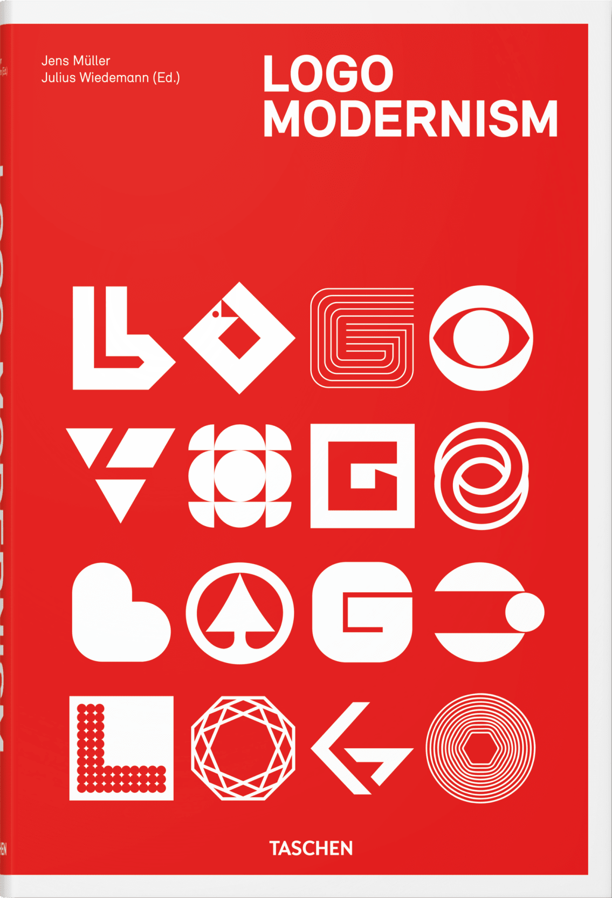
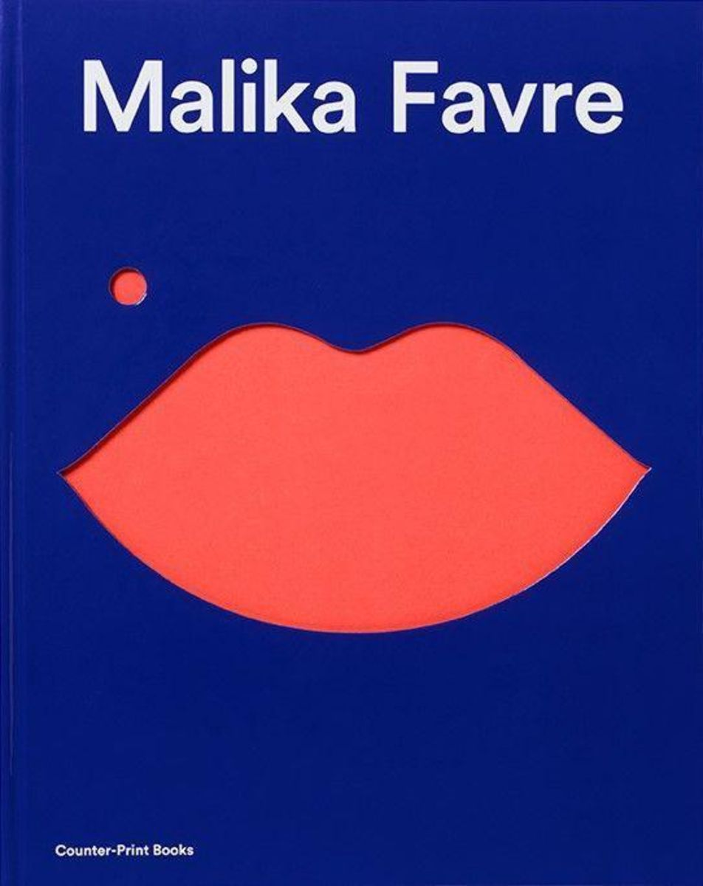

Learning Design as a Hobbyist Gamedev
July 5th 2023
hi. My main goal right now is to finish my game ULTRAMASSIVE. However, I'm currently lacking the design skills to make it look the way I want. So, I gotta learn how to make it look better.
The first step is to find resources for the skills I'm lacking. The topics will probably resolve around Visual Design mostly. This page will list resources that I have found and were helpful, or resources that might be helpful in the future. I'm also planning to document what I've learned along the journey, however this page might not be the right place for that.
If you have any input, or recommendations, please share them with me on mastodon.
Topics
The main goal is to build up a foundation by learning the most important principles and concepts to help me improve the visuals of my game.
That's why I'll mainly focus on these aspects:
- Practical general advice (like this),
- How to pair fonts,
- How to pick good / matching color pairs,
- How to design a logo,
- Interface Design for Games (UI).
What I'm not looking for:
- Design history,
- Designer memoirs,
- How the business works,
- How to run a studio.
Articles
- Visual Design Rules You Can Safely Follow Every Time: Practical advice, super useful!
Unsorted links
For now... are these gonna be useful? No one knows!
- WALKER
- HI FRUCTOSE
- AIGA Eye on Design
- CREATIVE BOOM
- Ray Gun Magazine
- fontpair
Books
I can't actually recommend any of these, because I haven't read them yet. However, I am including info about why I think they might be helpful. Come back later to read about what I actually thought of these. Maybe I will have read one or two by then!
“Logo Modernism”
This could come in handy to design the game logo (duh :)), but I hope will also give me inspiration to make better UI elements.
“Interaction of Color”
I'm afraid I will have to add some color to the game.

“Malika Favre”
This is supposed to be a “great book for illustrators, but also one of the best graphic design books”. This looks like one I might file under ‘inspiration’.
“The Graphic Design Idea Book”
I hope for a useful source of inspiration.